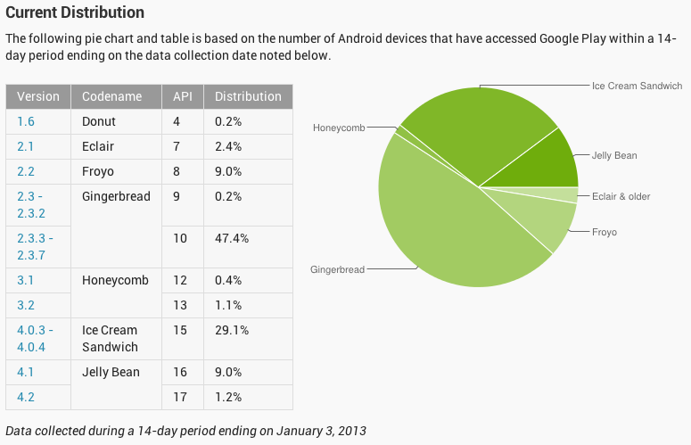
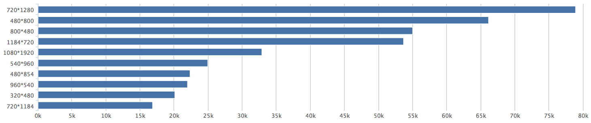
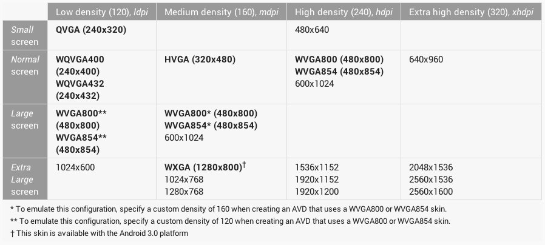

Rock with Android
适配
分裂的现状和美好的未来
安卓现在的主要版本是2.2/2.3，以及4.0以上，从下图可以看出，可以从API 10以上开始支持，甚至激进些，直接从API 15开始支持。或者说再过半年，可以只考虑4.x了，现在可能还不行。
分辨率更是百花齐放了！下面是某App的屏幕分辨率一个月的分布，可以看到xhdpi甚至xxhdpi占主流，FULL HD的设备也越来越多，不过对于平板，基本上就只是Nexus 7和三星某几款平板，别的市场占有率实在是不行，如果精力不够，可以只适配手机。
结论是也许到2014年，就可以都只适配4.x，但是现在兼容2.3是比较安全的策略。而高分屏是大趋势，所以要特别为大屏高分手机做优化，因为都是“高端”用户。
屏幕尺寸和DPI

从上图可以看到，除了屏幕本身尺寸外，屏幕像素密度（DPI）也是一个维度来区别具体设备的，而且在适配中更常用。
上图是具体的分辨率，尺寸，DPI的分布。
声明支持的适配
首先在manifest里面声明，你的应用想要支持的屏幕尺寸和DPI的种类，比如下面的来者不拒的例子：
<supports-screens
android:anyDensity="true"
android:largeScreens="true"
android:normalScreens="true"
android:smallScreens="true"
android:xlargeScreens="true"/>
对于不同的DPI需要提供不同的图片资源，分别放在以下目录。对设计师而言，这需要额外的工作量，但是有工具可以简化这件事情，在下一章定制UI里，我们会讲到。
res/drawable //默认资源
res/drawable-ldpi
res/drawable-mdpi
res/drawable-hdpi
res/drawable-xhdpi
res/drawable-xxhdpi
单位的选择：dp，px，sp
在安卓上View的宽高采用的单位推荐使用DIP(Density Independent Pixel)，也叫做dp。dp是一个相对的值，以上面的mdpi为基准，1dp对应1px，而hdpi是1.5像素，xhdpi是2px，ldpi是0.75px。
与dp不同，px是真正的物理像素，比如在hdpi上的设备上1px是0.1毫米，在xhdpi可能是0.05毫米（只是打比方，数据不准确）。除了一些精确要求像素值的地方使用px，比如分割线等，其他的长度单位推荐用dp。
px = dp * (dpi / 160)
sp(scale-independent pixel)，也是相对的单位，主要用于设置字体大小。和dp类似，基本也符合上面的公式，但是还受用户的设置里面的字体大小设定值scale影响，如下
px = sp * (dpi / 160) * scale
所以使用sp时，当用户在系统设置时更改了字体大小，你的应用就能做到对应的变化。
如果对换算有兴趣的同学可以看下面的安卓源码，源码可以在你的SDK目录里面找到，类似sources/android-17之类的路径下面：
//android.util.TypedValue里的转换不同单位的函数
public static float applyDimension(int unit, float value,
DisplayMetrics metrics)
{
switch (unit) {
case COMPLEX_UNIT_PX:
return value;
case COMPLEX_UNIT_DIP:
return value * metrics.density; //具体看DisplayMetrics的注释
case COMPLEX_UNIT_SP:
return value * metrics.scaledDensity; //具体看DisplayMetrics的注释
...
}
return 0;
}
利用LinearLayout的weight
除了尺寸使用dp来适配不同屏幕宽度，合理使用wrap_content和match_parent之外，LinearLayout的weight属性，也是常用来适配的一个手段。
<LinearLayout xmlns:android="http://schemas.android.com/apk/res/android"
android:layout_width="match_parent"
android:layout_height="match_parent"
android:orientation="vertical"
>
<View
android:layout_width="match_parent"
android:layout_height="wrap_content"
/>
<View
android:layout_width="match_parent"
android:layout_height="wrap_content"
android:layout_weight="1.0"
/>
</LinearLayout>
上面的第二个View设置了weight，那么会自动占满除了第一个View的剩余的屏幕空间。如果两个View都设置了weight的值，而且都大于零，那么它们所占的比例和weight值是成反比的。比如weight分布为1.0和2.0，那么2个View的高度，实际上是2／3和1／3个屏幕高度的。
适配横屏
很多页面横屏直接拉伸也是可以接受的，当然某些应用的场景还是需要做到精致些的。最简单的适配横屏是直接换一个横屏的layout，放到res/layout-land，或者使用同一个layout，但是使用不同的style，放到res/values-land/style.xml。
这里注意一个细节，Activity在屏幕旋转时，默认是直接onStop -> onRestart了，需要在manifest里设置下面的属性：
android:configChanges="orientation|keyboardHidden|locale|screenSize"
然后在Activity的 onConfigurationChanged 方法里，做具体处理，比如判断config当前是不是横屏，对控件做微调等等。
利用后缀规则微调
安卓的各种资源可以使用后缀，系统会根据当前设备的情况来做从最精确到最宽泛的匹配，拿layout为例，可以从下面几个维度来做后缀：
res/layout-xlarge-tvdpi-land //顺序是尺寸，DPI，方向，当然这是个极端的例子
res/layout-tvdpi //Nexus 7的诡异DPI
res/layout-land //横屏
//Android 3.2引入的新的后缀，主要服务于平板
res/layout-sw600dp //smallest possible width，适配最小宽或者高是600dp的设备
res/layout-w720dp //available screen width，适配最小宽度是600dp的设备
res/layout-h720dp //available screen height，适配最小高度是600dp的设备
更多关于适配，可以仔细参考screens support。
UI定制
我个人认为安卓应用的设计风格首先要尽量遵守Holo风格，当然如果能有打破Holo风格的设计那就更加好了，但是一定要在理解的基础上。照抄iOS的设计，开发出来的应用，一是开发成本大，二是没有用到安卓的系统优势和系统风格出入太大，比如微信。
想要开发一款精美的应用，不光要靠设计师的努力，也要靠开发工程师的精雕细琢。UI定制，主要有下面几种途径。
- 更改默认的背景或前景图片
- 更改默认的字体，颜色，间距等排版格式
- 加强系统控件的表现或交互能力
- 自己从头实现自定义控件
前面两条都是通过使用style或者theme来覆盖默认控件的样式，当然也可以在代码里动态指定。第3条，一般是通过继承某个View控件，复写onDraw方法或者其他监听事件的回调。从头自己定义控件，一般不多见，除非有足够强的理由。
利用Android Asset Stdio简化工作量
因为大部分应用都使用ActionBar作为导航方式，这里推荐Android Asset Studio，可以方便的定制ActionBar相关的样式，并生成打包对应的style和icon等资源文件，大大的减少了设计师和开发者的工作量。